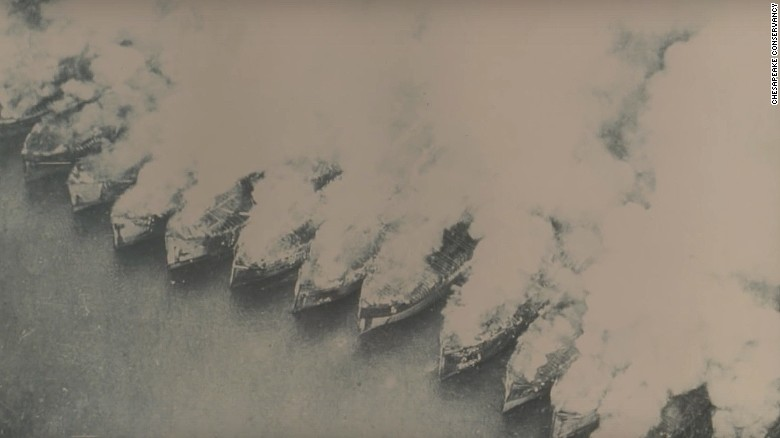

Birds on wooden posts and the old Virginia ferry The Accomack sit quietly in Mallows Bay on Saturday, Oct. 12, 2019. (Lillian Reese)
The ship graveyard at Mallows Bay is alive
By: Lillian Reese Dec. 3, 2019
Nanjemoy, Md., is home to more deer than people. There are no gas stations in this rural part of Charles County and cell phone service is hard to come by. What most people don’t know: just off the banks of the murky Potomac River lies the Ghost Fleet of Mallows Bay.
Bald Eagles make their high-pitched whistling calls as they fly above land that has not fallen victim to suburban development. On clear sunny days, Washington D.C.—located just up the river and about an hour’s drive away—feels like a different planet.
The land surrounding the bay sits high on a hill, out of sight and out of mind to most people, as it has for hundreds of years. Before Mallows Bay was deemed the largest shipwreck fleet in the Western Hemisphere and the most recently designated National Marine Sanctuary, it was home to Native American tribes and it served as a Union Army camp during the Civil War.

Credit: National Oceanic and Athmospheric Administration (NOAA)
Don Shomette is a historian, author and expert on the history of Southern Maryland and untold tales of the state’s waterways. His father first took him and his brother on a camping trip to Nanjemoy during the 1950s and he still remembers the first time he saw the Ghost Fleet through the thick morning fog. For nearly 50 years of his professional career, Shomette has dedicated time, money and resources to showcasing, preserving and researching Mallows Bay.
The origin of the ship graveyard dates back prior the end of the First World War. The government ordered the construction of 1,000 wooden ships and steel ships to be built in 18 months to help with the war efforts.
“To build the fleet,” Shomette explained, “The United States of America became the greatest ship building nation in the world back to B.C.”
At the time, the United States had only 50,000 men who could build flat boats, according to Shomette. This industrial operation quickly became the largest of its kind in American history, requiring the labor of 2 million men.
“We had to build shipyards across the country,” said Shomette. “We had to train half a million men to build wooden ships. We had to get another half a million to cut the timber used in these ships… Then we had to get the timber to the shipyards, so we had to build a system of railroads all across America to do this."
In total, 32 towns across the country were established to accommodate the workers and their families. Schools, shopping centers and theaters began popping up in these towns, creating economic development and urban centers that still exist today in places like Madisonville, La., and Benzonia, Mich.
When WWI ended, production also ceased. While these “throwaway ships”, as Shomette calls them, in Mallows Bay never saw action, they are proof of the can-do spirit of the American workforce that helped push the U.S. win the war.


Credit: Both images from the Smithsonian Institute of American History
After the buzz of war had died down, 218 ships awaited their turn to be scrapped in Alexandria, Va. Once valuable pieces were stripped from the ships by Western Marine & Salvage Co., the hulls were taken back down the Potomac to Widewater, Va. After a massive ship fire that left Virginia watermen furious, the ships were towed across the river to Mallows Bay.
Following the Great Depression, where ships were essentially looted of all value, over 100 ships were tied together and burned to the waterline in what became known as the largest ship fire in American history.
Credit: Chesapeake Conservancy
“A lot of people said they were trash,” Shomette said. “Nobody really realized how important they were.”
Shomette said some of the ships that found their final resting place at Mallows Bay had quite a resume. One ship is credited with playing a role in the first—and only—successful rescue of a sunken submarine crew in 1939. Another, a vessel measuring 250-feet long, was built in just 17 days.
In addition to the fleet of WWI ships, Shomette and other researchers and underwater archeologists believe they discovered a small boat belonged to the Virginia State Navy during the American Revolution.
“It’s a very rich, rich area of American history,” said Charles County Chief of Parks and Grounds John Snow.
Because of the unique opportunities Mallows Bay offers to explore in the middle of the water, Snow said tourism has been picking up at the park since about 2014.

Satellite view of the sunken ships in Mallows Bay. (2019)
“It’s getting really busy,” Snow said. “We have one kayak launch and one [boat] ramp and we really need to get a second [launch].”
While some Charles County residents have no clue Mallows Bay exists, Greg Buck has known about the spot his whole life and it has become his favorite fishing spot. Buck has been ardently fishing at Mallows Bay for 10 years. In that time, he has reeled in 20-pound catfish and 27-inch Rockfish all from his little blue kayak.
“This is my 19th species of fish I’ve caught here,” he said as he took a small fish off of his line.
On November 9, the park became just the 15th National Oceanic and Athmospheric Association National Marine Sanctuary—and the first to be designated since 2000—because of its ecological, historical and cultural importance. However before ceremony even happened, Snow remained focused on making improvements for the future of the site.
“Through this process, one change we’ve had is that we're on the map,” he said. “I’m hoping the big change will be some resources we can improve our interpretation of the site… We need land-based interpretation. We need a visitor center, some type of guided boat tour and more visitor services on land.”